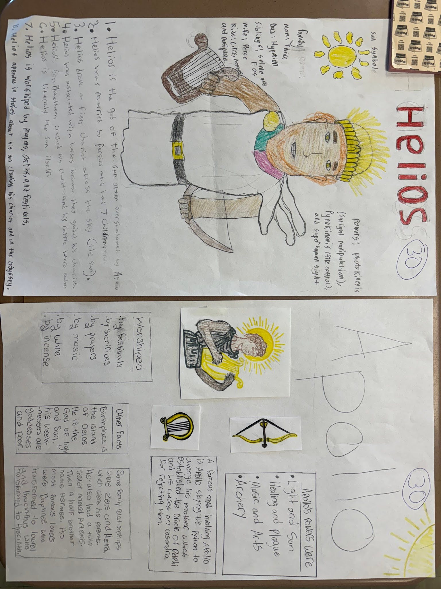

These two artifacts are from a group project assignment that I gave to my students during our ancient Greece unit. Students were asked to get into groups of 3 people and create a poster on a Greek god or goddess of their choosing. When designing a group assignment, I like to make sure that each person in each group will have work to do. For this assignment, I asked the students to have one researcher, one artist, and one person who interprets the research and puts it into the paper. This gives each student a clear role, and it allows students to show their strengths in areas by working on what they want to individually, and combining their work to make something greater as a team in the end.